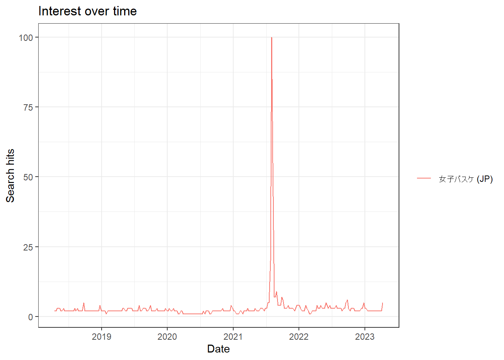
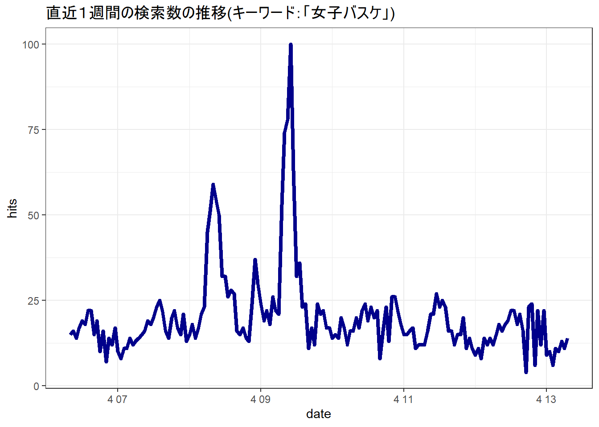
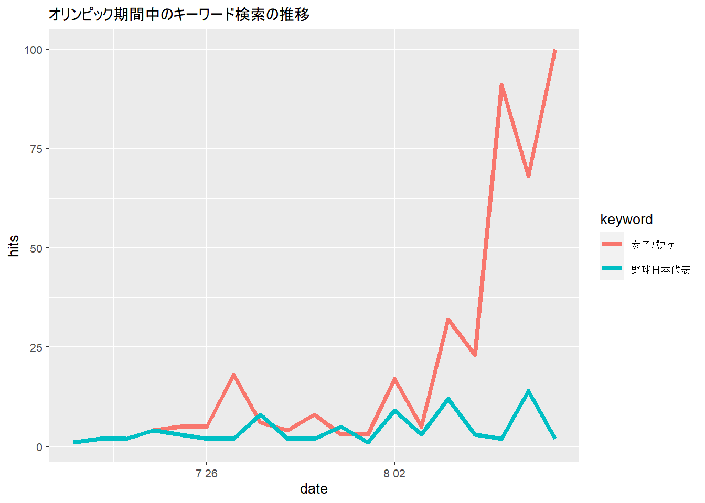

chapter: 8 RによるSNSデータの分析
以下では、Twitterデータを使ったワードクラウドの作成と、GoogleトレンドのRを使った操作を解説します。
8.1 Twitterデータの活用
Twitterデータの取得・分析をおこないます。分析には、rtweetというpackageを使用します。ワードクラウドを作るための準備として、最初に形態素解析のためのソフトウェアを下記の手順でインストールします（ここは大きな山場です）。
# install.packages("wordcloud2")
library(ggplot2)
library(rtweet)##
## Attaching package: 'rtweet'## The following object is masked from 'package:purrr':
##
## flattenlibrary(tidytext)
library(dplyr)
library(RMeCab)## Please make sure you have installed 64 bit version of MeCab for Windows, with UTF8 dictionary.
## if not, dowlnload it from 'https://github.com/ikegami-yukino/mecab/releases'
## uninstall old 32 bit MeCab and install new 64 bit MeCablibrary(wordcloud2)
library(lubridate)
library(tidyr)
library(stringr)
# ディレクトリの設定
# ここで指定したディレクトリにtmp_dataというフォルダを事前に作成する。
#setwd("/Users/yamamoto/R/forTeaching/")8.1.1 Mecabのインストール
はじめに日本語の形態素解析に必要なMecabというソフトウェアをインストールする。 RMeCabについてはこちらのサイト(http://rmecab.jp/wiki/index.php?RMeCab)を参照すると良い。
8.1.2 1. Windowsの場合
Mecabのインストール 最初に MeCabをインストールします。ただし、R-4.2.0 以降、オリジナルのMeCabでは動作しません。ここ https://github.com/ikegami-yukino/mecab/releases から 64bit版MeCabをダウンロードし、辞書として必ずUTF-8を指定してください。また、RMeCabで解析するファイルは UTF-8 で保存してください（WindowsのデフォルトはShift-JISであり、全角文字が含まれるCSVファイルなどもRMeCabに読ませる場合はUTF-8に変更してください）。
RMeCabのインストール MeCab本体がデフォルトとは違うフォルダにインストールされている場合、インストール先（デフォルトだとC:Files）にあるmecabrcをコピーし、自分のホームフォルダ(C::）に、頭にドットを付けた .mecabrc ファイルとして用意する必要があります。その際、dicdir = を編集します。ちなみにデフォルトだとdicdir = C:Files 。
8.1.3 2. Macの場合
MacがIntelかM1チップかを確認する。M1チップのMacに誤ってIntel版のRがインストールされていないかも確認する。
Mecabの本家はここですが、今回はターミナルを立ち上げて以下を実行することで、 Mecab本体および使用する辞書のダウンロードからインストールまでを行います。この方法は、こちらを参考にさせていただきました。
cd ~/Downloads
curl -fsSL ‘https://drive.google.com/uc?export=download&id=0B4y35FiV1wh7cENtOXlicTFaRUE’ -o mecab-0.996.tar.gz
tar xf mecab-0.996.tar.gz
cd mecab-0.996
./configure –with-charset=utf8
make
sudo make install
以上でMeCabのインストールが終了する。
- ターミナルから以下を実行する（辞書のインストール）
cd ~/Downloads
curl -fsSL ‘https://drive.google.com/uc?export=download&id=0B4y35FiV1wh7MWVlSDBCSXZMTXM’ -o mecab-ipadic-2.7.0-20070801.tar.gz
tar zvxf mecab-ipadic-2.7.0-20070801.tar.gz
tar xf mecab-ipadic-2.7.0-20070801.tar.gz
cd mecab-ipadic-2.7.0-20070801
./configure –with-charset=utf8
make
sudo make install
以上でMeCabが使う辞書のインストールが終了する。
以下をターミナルで確認する。
$ mecab
すもももももももものうち
すもも 名詞,一般,,,,,すもも,スモモ,スモモ
も 助詞,係助詞,,,,,も,モ,モ
もも 名詞,一般,,,,,もも,モモ,モモ
も 助詞,係助詞,,,,,も,モ,モ
もも 名詞,一般,,,,,もも,モモ,モモ
の 助詞,連体化,,,,,の,ノ,ノ
8.2 ワードクラウド
ワードクラウドでカウントしたくない記号などを排除する。
# 分析に加えたくない記号などを削除する
rt$text <- gsub("https://.*", "", rt$text)
rt$text <- gsub("@", "", rt$text)
rt$text <- gsub("RT", "", rt$text)
rt$text <- gsub("#", "", rt$text)
rt$text <- gsub("\\(", "", rt$text)
rt$text <- gsub("\\)", "", rt$text)
rt$text <- gsub("/", "", rt$text)
rt$text <- gsub(":", "", rt$text)
# こちらにお世話になりました
# https://note.com/text_tier2718/n/n6b20ccd3cb49
rt$text <- rt$text %>%
str_replace_all(pattern = '\\p{ASCII}',replacement = "") # 記号を消します。形態素解析を実施
rt_text <- rt$text %>%
na.omit() %>%
#iconv(from = "UTF-8", to = "CP932") %>% # windowsのみEncodeの変更が必要です。
paste(collapse = "") # テキストを結合
textfile <- tempfile() # 一時ファイルの入れ物を作成
write(rt_text, textfile) # docDFで読むために一時ファイルを作成
cloud <- docDF(textfile, type = 1) #形態素解析を行う際に特定の品詞に絞って抽出
#cloud <- docDF(textfile, type = 1, pos = "名詞")
unlink(textfile) # 一時ファイル消去
cloud <- cloud %>%
select(everything(), FREQ = starts_with("file")) %>% # 4列目のfile****....という名前が長いためFREQへ変更
arrange(desc(FREQ))
# 消したい不要なワードを設定
exclude_word = c("する","なる","やる","ある","いる","-","♪","エリザベス","女王",x)
# 動詞と名詞で良い感じのやつを残す
cloud2 <- cloud %>%
filter(grepl(pattern = "動詞|名詞", x = POS1) &
!grepl(pattern = "助動詞|代名詞", x = POS1) &
!grepl(pattern = "非自立|接尾|数|代名詞", x = POS2)
) %>%
filter(!TERM %in% exclude_word)可視化をする。
# Takaoフォント様 https://launchpad.net/takao-fonts
cloud2 %>%
select(TERM,FREQ) %>%
slice(1:100) %>% # 描画する範囲を設定
wordcloud2(fontFamily = 'Takao Pゴシック', color = "random-light",
minRotation = 0, maxRotation = 0, size = 1.2)8.3 Googleトレンドの分析
社会トレンドを分析できる別の手段として、Googleトレンドがあります。検索数ではなく、相対的な変化を表すものですが、人々の関心の変化を時系列で見る上では非常に参考になります。Googleトレンドは、gtrendsRというpackageで分析することが可能です。
#install.packages("gtrendsR")
library(gtrendsR)
# 以下は、https://skume.net/entry/2021/03/28/023122より
#引数について
#keyword: Google Trends query キーワードである文字ベクトル。複数のキーワード入力も可。
#geo: queryの地理的な地域を示す文字ベクトル。世界中の場合には、"all"を指定する。
#また上記の国コードなどを使用することで、複数の国・地域を指定できる。
#time: queryの期間を指定する文字列。以下を参照のこと。
#"now 1-H" 最後の1時間
#"now 4-H" 最後の4時間
#"now 1-d" 最後の1日
#"now 7-d" 過去7日間
#"today 1-m" 過去30日間
#"today 3-m" 過去90日
#"today 12-m" 過去12ヶ月
#"today+5-y" 過去5年間(デフォルト)
#"all" Google Trends の開始時（2004 年）から
#"Y-m-d Y-m-d" 2つの日付の間で指定（例：「2010-01-01 2010-04-03」）
trendWB5yrs <- gtrends(keyword = "女子バスケ",
geo = "JP", #地域
time = "today+5-y") #期間(例：五年)
plot(trendWB5yrs)
デフォルトのplot関数では凡例が文字化けするようなので、ggplot2にて描画します。
trendWB7days <- gtrends(keyword = "女子バスケ",
geo = "JP", #地域
time="now 7-d")
trendWB7days %>%
.$interest_over_time %>%
ggplot(aes(x = date, y = hits)) +
geom_line(colour = "darkblue", size = 1.5) +
theme_bw(base_family = "HiraKakuPro-W3")+
ggtitle("直近１週間の検索数の推移(キーワード：「女子バスケ」)")## Warning in grid.Call(C_stringMetric, as.graphicsAnnot(x$label)): font family
## not found in Windows font database
## Warning in grid.Call(C_stringMetric, as.graphicsAnnot(x$label)): font family
## not found in Windows font database
## Warning in grid.Call(C_stringMetric, as.graphicsAnnot(x$label)): font family
## not found in Windows font database## Warning in grid.Call(C_textBounds, as.graphicsAnnot(x$label), x$x, x$y, : font
## family not found in Windows font database
## Warning in grid.Call(C_textBounds, as.graphicsAnnot(x$label), x$x, x$y, : font
## family not found in Windows font database
## Warning in grid.Call(C_textBounds, as.graphicsAnnot(x$label), x$x, x$y, : font
## family not found in Windows font database
## Warning in grid.Call(C_textBounds, as.graphicsAnnot(x$label), x$x, x$y, : font
## family not found in Windows font database
## Warning in grid.Call(C_textBounds, as.graphicsAnnot(x$label), x$x, x$y, : font
## family not found in Windows font database
## Warning in grid.Call(C_textBounds, as.graphicsAnnot(x$label), x$x, x$y, : font
## family not found in Windows font database
## Warning in grid.Call(C_textBounds, as.graphicsAnnot(x$label), x$x, x$y, : font
## family not found in Windows font database
## Warning in grid.Call(C_textBounds, as.graphicsAnnot(x$label), x$x, x$y, : font
## family not found in Windows font database
## Warning in grid.Call(C_textBounds, as.graphicsAnnot(x$label), x$x, x$y, : font
## family not found in Windows font database
## Warning in grid.Call(C_textBounds, as.graphicsAnnot(x$label), x$x, x$y, : font
## family not found in Windows font database## Warning in grid.Call.graphics(C_text, as.graphicsAnnot(x$label), x$x, x$y, :
## font family not found in Windows font database## Warning in grid.Call(C_textBounds, as.graphicsAnnot(x$label), x$x, x$y, : font
## family not found in Windows font database
複数キーワードに挑戦してみよう。
search_words<-c("女子バスケ", "野球日本代表")
Olympics <- gtrends(keyword = search_words,
geo = "JP", #地域
time="2021-07-21 2021-08-08")
Olympics %>%
.$interest_over_time %>%
ggplot(aes(x = date, y = hits, color=keyword)) +
geom_line( size = 1.5) +
ggtitle("オリンピック期間中のキーワード検索の推移")## Warning in grid.Call(C_textBounds, as.graphicsAnnot(x$label), x$x, x$y, : font
## family not found in Windows font database
## Warning in grid.Call(C_textBounds, as.graphicsAnnot(x$label), x$x, x$y, : font
## family not found in Windows font database## Warning in grid.Call(C_stringMetric, as.graphicsAnnot(x$label)): font family
## not found in Windows font database## Warning in grid.Call(C_textBounds, as.graphicsAnnot(x$label), x$x, x$y, : font
## family not found in Windows font database
## Warning in grid.Call(C_textBounds, as.graphicsAnnot(x$label), x$x, x$y, : font
## family not found in Windows font database
## Warning in grid.Call(C_textBounds, as.graphicsAnnot(x$label), x$x, x$y, : font
## family not found in Windows font database
## Warning in grid.Call(C_textBounds, as.graphicsAnnot(x$label), x$x, x$y, : font
## family not found in Windows font database
## Warning in grid.Call(C_textBounds, as.graphicsAnnot(x$label), x$x, x$y, : font
## family not found in Windows font database
## Warning in grid.Call(C_textBounds, as.graphicsAnnot(x$label), x$x, x$y, : font
## family not found in Windows font database
## Warning in grid.Call(C_textBounds, as.graphicsAnnot(x$label), x$x, x$y, : font
## family not found in Windows font database
## Warning in grid.Call(C_textBounds, as.graphicsAnnot(x$label), x$x, x$y, : font
## family not found in Windows font database
## Warning in grid.Call(C_textBounds, as.graphicsAnnot(x$label), x$x, x$y, : font
## family not found in Windows font database
## Warning in grid.Call(C_textBounds, as.graphicsAnnot(x$label), x$x, x$y, : font
## family not found in Windows font database## Warning in grid.Call.graphics(C_text, as.graphicsAnnot(x$label), x$x, x$y, :
## font family not found in Windows font database## Warning in grid.Call(C_textBounds, as.graphicsAnnot(x$label), x$x, x$y, : font
## family not found in Windows font database
## Warning in grid.Call(C_textBounds, as.graphicsAnnot(x$label), x$x, x$y, : font
## family not found in Windows font database
## Warning in grid.Call(C_textBounds, as.graphicsAnnot(x$label), x$x, x$y, : font
## family not found in Windows font database
上記の例では、time="2021-07-21 2021-08-08"というフォーマットで期間を設定している点にも注意しよう。これをみると、日本女子バスケットボール代表の快進撃で検索数が大きく増加していることがわかる。